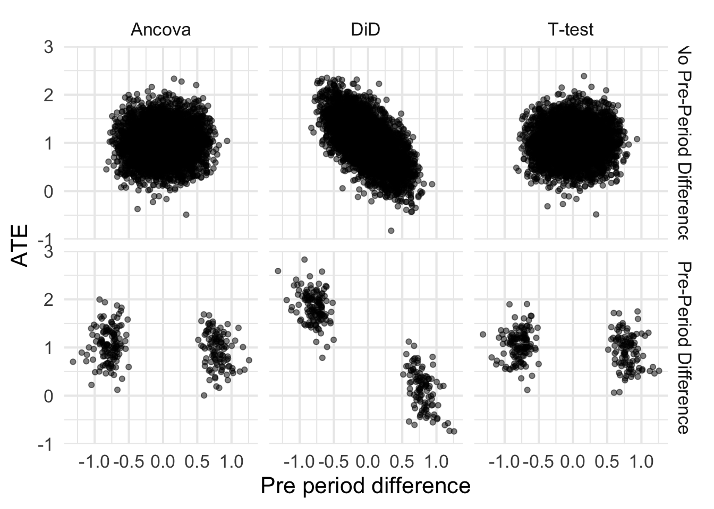

Difference in Difference Estimates Can Be Inaccurate When Adjusting For Detected Pre-Treatment Differences in Randomized Experiments
AB Testing
Statistics
Causal Inference
Author
Demetri Pananos
Published
September 3, 2023
Edits:
@devonbancroft1 mentions that in AB testing, users are highly correlated between periods. It would be useful to examine how that correlation changes outcomes. I’ve edited the simulation to allow for drawing correlated pre and post data.
@fiftycente1 mentions that bias is about expectation. That’s true, I’ve edited my post to explicitly distinguish between bias and accuracy.
Introduction
I’ve run into people randomizing units to treatment and control and then looking to see if there are pre-treatment differences with a hypothesis test. If there are, I’ve heard – at Zapier and cross validated – that a difference in difference (DiD) should be performed. After all, there are baseline differences! We need to adjust for those.
To be clear – using DiD to analyze randomized experiments is fine. The resulting estimate of the ATE should be unbiased assuming the experiment was run without a hitch. You don’t need to do difference in difference because prior to treatment the two groups will have the same distribution of potential outcomes. Their pre-treatment differences are 0 in expectation. Any detection of a difference – again, assuming the experiment was run well – is sampling variability.
Running DiD because we found baseline differences is a form of deciding on analysis based on the observed data, and we all know that is a statistical faux pas. But how bad could it be? Are our estimates of the treatment effect biased? Are they precise? What do we lose when we let the data decide if we should run a DiD or a t-test?
Simulation
To find out, let’s simulate a very simple example. Let’s assume that I run an experiment and measure units before and after. The observations on each unit are iid and have standard normal distribution in the absence of the treatment. If \(A\) is a binary indicator for treatment (1 for treatment, 0 else) then the data are
We will allow for the pre and post observations to be correlated with correlation \(\rho\).
I’ll run 5, 000 simulations of a simple randomized experiment. Each time, I’ll sample \(N\) units in each arm, enough to detect a treatment effect from a t-test with 80% power. I’ll then run a t-test via OLS and a DiD. I’ll record the pre-treatment difference in each group and if it was statistically significant at the 5% level. I’m also going to carry around the estimates from an ANCOVA since this seems to be the recommended approach for when we have pre-treatment information that is correlated with the outcome. For these simulations, I’ll set \(\tau=1\) and \(\sigma=1\) which means I need \(N=17\) users per arm to achieve 80% power.
We’ll plot some treatment effect estimates and see what is happening when we choose to do DiD when the data suggest we do. Now importantly, I’m making very strong assumptions about the experiment being run. In particular, I’m making assumptions that all went well, there is no funny business with timing or randomization, etc. In terms of a medical trial, I got 34 people to all stand in a line, randomly gave each placebo or drug, watched them all take it at the same time, and recorded outcomes. The purpose of these simulation and blog post is to investigate statistical properties and not to wring about whatabouts.
In the code cell below is the code to run these simulations
Code
simulate_data <-function(N_per_arm=17, tau=1, sigma=1, rho=0, ...){ Sigma <-diag(rep(sigma, 2)) %*%matrix(c(1, rho, rho, 1), nrow=2) %*%diag(rep(sigma, 2)) A <-rep(0:1, N_per_arm) Y <-cbind(0, tau*A) + MASS::mvrnorm(2*N_per_arm, mu =c(0, 0), Sigma = Sigma) y_pre <- Y[, 1] y_post <- Y[, 2] pre <-tibble(i =seq_along(A), y=y_pre, trt=A, period=0) post <-tibble(i =seq_along(A), y=y_post, trt=A, period=1)bind_rows(pre, post)}do_analysis <-function(...){ d <-simulate_data(...) dwide <- d %>%mutate(period =if_else(period==1, 'post','pre')) %>%pivot_wider(id_cols =c(i, trt), names_from = period, values_from = y)#DiD did <-lm(y ~ trt*period, data=d)# t-test, only on post data tt <-lm(y ~ trt, data=filter(d, period==1))## Ancova ancova <-lm(post ~ pre + trt, data=dwide) tt_ate <-coef(tt)['trt'] did_ate <-coef(did)['trt:period'] ancova_ate <-coef(ancova)['trt'] pre_test <-t.test(y~trt, data =filter(d, period==0)) pre_period_diff <-diff(pre_test$estimate) detected <-if_else(pre_test$p.value<0.05, 'Pre-Period Difference', 'No Pre-Period Difference')tibble( tt_ate, did_ate, ancova_ate, pre_period_diff, detected )}results <-map_dfr(1:5000, ~do_analysis(), .id ='sim')
Case 1: Uncorrelated Pre and Post Observations
Shown below are the ATEs from each analysis when the pre and post are uncorrelated. Nothing too surprising here, the ATEs are unbiased (the histograms are centered at \(\tau=1\)). It seems that the t-test has lower sampling variance/higher precision, which means lower MSE.
Let’s now plot the ATEs for each method against the pre-period differences. Because all observations are assumed independent, I’m going to expect that the ATEs for the t-test are uncorrelated with the pre-period difference. However, because the DiD uses pre-period information, I’m going to expect a correlation (I just don’t know how big).
Great, this makes sense. The ATE is for the t-test is uncorrelated with the pre-period difference, as expected. The ATE DiD is correlated with the pre-period difference, and that’s likely due to regression to the mean. Now, let’s stratify by cases when the pre-period difference is (erroneously) thought to be non-zero.
Code
plot +facet_grid(detected ~ analysis)

It isn’t unsurprising that the tails of each of these blobs is cut off. After all, the pre-period difference needs to be extreme enough to reject the null. Let’s first talk about that bottom right cell – the t test when there is a detected pre-period difference. Because there is no correlation between pre-period difference and the ATE, the ATEs are still unbiased. That’s great. What about DiD (bottom middle cell)?
Note that the correlation means that those blobs don’t have the same mean. In fact, if you run K-means on those blobs, you can very easily separate them and estimate the ATE and its very far from 1! Technically, this is unbiased because we have to average over each blob. So it isn’t that the estimates are biased from DiD, but they are inaccurate. Take a look at the MSE for each estimate (shown below). Using DiD when you detect a pre-treatment difference may be unbiased, but it has very high MSE as compared to the two other methods.
While those estimates are unbiased, the low precision/high MSE is a good argument against checking for pre-treatment differences and then deciding on analysis style. This would be like saying “the river is a foot deep” when in reality the river is an inch deep in most places, and a mile deep in others. While the estimates are unbiased, any one particular estimate is fairly far from the true ATE.
Let’s now let pre and post correlation be non-zero, but still moderate in size. We’ll let \(\rho = 0.45\) which is still much smaller than most correlation coefficients I’ve seen in real AB tests at Zapier.
Making the same plot as we did before, we see that DiD still suffers from poor accuracy as measured by MSE, bow now the T-test is starting to demonstrate some positive correlation between pre-period difference and ATE. Its worth mentioning again that we would not really do anything different with the information that there was a pre-period difference when using the t-test. The estimate of the ATE would still be unbiased and have low MSE.
In AB testing, it isn’t uncommon to see \(\rho>0.9\) between pre and post outcomes. When we run experiments and seek to have an effect on existing user’s monthly payments, many users won’t change at all meaning they are typically paying the same amount this month as they were last. That results in very high \(\rho\).
Let’s rerun the simulation, but this time specify that pre and post have a correlation of 0.95.
I’m fairly surprised to see that the results almost completely switch. First, the DiD estimator becomes much more efficient (see the joint distribution of ATEs) which is cool. Second, now the estimates from DiD become unbiased and accurate which is a nice change. Ancova seems to do just as well as DiD in terms of precision and accuracy, which was not expected simply because I didn’t think DiD would work this well under these assumptions.
Randomization creates two artificial groups who have the same distribution of potential outcomes. There is no need to correct for baseline differences in randomized groups a la DiD, and there is certainly no need to check for baseline differences after randomizing groups.
However, deciding to adjust for baseline differences with DiD can result in unbiased but inaccurate estimates of the treatment effect under some circumstances. From this post, those conditions seemed to be when pre and post treatment outcomes were uncorrelated. That can happen when the outcomes are very noisy or when outcomes are homogeneous across units. While unbiased, any one particular estimate from this procedure was very far away from the true ATE, as evidenced by the larger MSE.
However, when outcomes are correlated between pre and post (like they can be in AB tests), then the story flips. DiD becomes very efficient, nearly as efficient as Ancova, with good accuracy and unbiased estimates.
Generally it seems then that using DiD for a randomized experiment is fine. In cases where the outcomes are highly correlated, you could even check for baseline differences with out much harm. But it isn’t needed, and there are circumstances where deciding to use DiD because of detected baseline differences can hurt your estimates.
If you want unbiasedness and low variance/high precision, the results from this post (and advice elsewhere) seems to be to stick with Ancova.